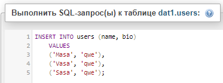
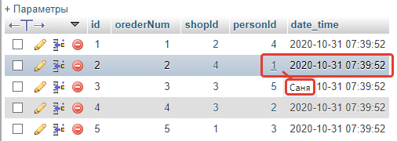

Оглавление.
- 1 Что это.
- 2 Команды.
- 3 Выбор данных.
- 4 Индексы.
- 5 Объединение.
- 6 Функции.
- 7
- 8
- 9
- 10
- Для собеседований.
- Вниз
Как куда зачем.
Ютуб вот по сюдова учим
MySQL это система управления реляционными базами данных с открытым исходным кодом (СУРБД) с моделью клиент-сервер. SQL - язык структурированных запросов.
Язык запросов между приложением и базами данных. Для изучения нужно что-то там.
Мамп делает что-то там.
Проблема была в мампе, вот примерное решение, LoadModule perl_module modules/mod_perl.so закомментировать с помощью диеза. Файл по адресу MAMP\conf\apache. Прога капризная, не сработала сразу.
Открывает локально сервер с базами, выбрать phpMyAdmin, и приступить к изучению команд.
По изучении пхп решил перейти на программу опенсервер, как более функциональную для обоих учебных процессов. В её менюшке есть строка phpMyAdmin, которая запускает локально сайт вирт сервера. root/root для входа. Далее.
Глава 2. Основные команды.
В разделе скл пишем командами. Регистр любой, но лучше верхним. Каждую команду завершать точка с запятой. Для последней необязательно. После команды кнопка вперёд. create - создать базу данных. После ввода команды ниже появится её запись со ссылкой на справочники. Drop для удаления. На вкладке структура можно создать таблицу через интерфейс и посмотреть подсказки по контенту, например типы данных. Далее. Перейти в базу данных, вкладка скл. create table создать таблицу, в скобках минимум одно поле с типом должно быть. Кнопка вперёд, далее найти слева в меню эту таблицу, открыть структура вкладку, посмотреть, или в обзор. В созданной таблице посмотреть на вкладку вставить. Далее.
Если во время работы производить действия с данными через интерфейс, очень часто или всегда отображаются подсказки или мгновенные логи с запросом SQL, полезно для освоения языка.
Типов данных много, основные сгруппированы вверху.
CREATE DATABASE name1;
DROP DATABASE name1;
CREATE TABLE table1( id INT );
DROP TABLE table1;
Создаётся таблица. Четыре поля. Для айди нотналл не позволяет задавать пустое поле, и там авто увеличение значения. Для типа варчар указано количество символов, 255 по умолчанию. Внизу праймери указывает, что айди основной и не может повторяться. После последней строки запятую поставить нельзя.
Со столбиками.
ALTER TABLE people ADD pasw varchar(32);
Эта строка для базы в таблицу people добавит новое поле (столбик) pasw.
ALTER TABLE people DROP COLUMN pasw;
Соответственно удалит поле.
ALTER TABLE people CHANGE birth birth DATE NOT NULL
Изменить строку, здесь просто добавили для поля бёрс запрет налла. Перед этим нужно заполнять все строки с наллом, иначе будет ошибка?
Работа со строками таблицы.
INSERT INTO users (name, birth, bio) VALUES('Саша', '2020-05-05', 'Просто чувак')
INSERT INTO users () Values () вставить пустую строку.
Поля можно указывать в любом порядке, все сразу можно не использовать, кроме нот-налл полей. Значения по порядку соответственно полям.
Множественное добавление дублированием запроса в VALUE.
UPDATE `users` SET `name` = 'Vova';
Переписало поле нейм во всех строках. Использование аптострофа необязательно, но рекомендуется. Для нового значения наоборот ошибка, нужны просто кавычки.
UPDATE `users` SET `name` = 'Dima' WHERE id = 3;
UPDATE `users` SET `name` = 'Dima' WHERE id > 3;
Переписало нейм для айди 3,
UPDATE `users` SET `name` = 'Саня!', `bio` = 'Сотку верни!';
Перезаписало два поля во всех строках. С предыдущим вариантом можно указать конкретную строку или несколько? Проверим.
UPDATE `users` SET `name` = 'Вова!' WHERE id = 2 AND id = 3;
UPDATE `users` SET `name` = 'Вова!' WHERE id = 2 OR id = 3;
Логическое, WHERE делает проверку, для И перепишет по двум условиям, для ИЛИ по каждому. Не совсем удобная конструкция, может есть лучше. Проверить.
DELETE FROM `test`;
DELETE FROM `test` WHERE id = 2;
Удалило все строки из таблицы тест, и строку с полем айди 2.
Прочие
TRUNCATE `test1`; тоже очищает таблицу, строки. Столбцы конечно сохраняются.
ALTER TABLE `test` ADD date_time DATETIME DEFAULT CURRENT_TIMESTAMP
При создании таблицы или добавлении поля, задать поле с типом DATETIME, по умолчанию втягивающее текущее время.
FOREIGN KEY(personId) REFERENCES users(id)
При создании таблицы, задать поле personId как ссылки, набор индексов на другую таблицу поле айди. Не очень понятно, Будет в главе номер там.
SELECT CONCAT('Имя: ',name,'. Биография ',bio) AS 'Инфо' FROM `users`
Эта строка клеит два поля вместе, задаёт псевдоним.
Глава 3. Выборы where order limit.
Табличка по операторам сравнения на видное место.
- =
- <=
- >=
- <, >
- <>
SELECT * FROM `users` ;
Выбирает или выводит все строки. Как при нажатии на вкладку обзор.
SELECT `name`,`bio` FROM `users` ;
Выведет в окне таблицу по столбцам имени и биографии.
SELECT `name`,`bio` FROM `users` WHERE id = 3;
Выведет нужные столбцы у нужных строк.
SELECT * FROM `users` WHERE 'field1' IS NULL or 'field2' IS NOT NULL
Выборка через ис вероятно ищет по типу? Хотя нет, тип же задаётся на уровне столбца, значит это сработает только для частных случаев вроде налла.
SELECT DISTINCT name FROM users
Выдало один столбец по нейму с уникальными значениями, то бишь без отображения дубликатов.
SELECT * FROM `users` LIMIT 2
Вывело первые элементы, две штуки. Если передать в лимит Х,У - будут пропущены Х первых строк, и выведены У следующих.
SELECT * FROM `users` WHERE id > 1 ORDER BY `name` LIMIT 3
Выбрать все столбцы, строки где ид больше 1, сортировать по имени и вывести три штуки. Последовательность where order limit строго соблюдается, независимо от присутствия. Дополнительные атрибуты для ордера уточнить, например сортировка второго уровня или обратная.
ORDER BY `name` DESC
Такой ордер отобразит наоборот.
WHERE id BETWEEN 2 AND 5
Вывод диапазна. Сочетается с остальной логикой, и или.
SELECT * FROM `users` WHERE id IN(4,3,5) ORDER BY `id` DESC
Вывело столбцы со строками, у которых айди равен 4,3,5 с сортировкой айди по убыванию. Сам ИН не задаёт порядок, сортировка происходит стандартная.
SELECT * FROM `users` WHERE `name` LIKE 'Са%'
Вывести строки, где поле нейм начинается с букв Са. '%ура%' может найти дурака. Вариант с '%урак' ищет все слова, заканчивающиеся на указанное. Обобщённо, процент указывает на положение игнорируемых символов или их присутствие вообще.
Глава 4. Индексы.
CREATE INDEX Xindex ON `users`(name)
Задать индексацию для поля нейм в таблице. Это не проявляется в пользовательской работе, кроме как ускорением процессов поиска. В интерфейсе наблюдается ключик, и ещё один файл индекса Xindex рядом с PRIMARY.
DROP INDEX Xindex ON `users`
Удалить его.
FOREIGN KEY(personId) REFERENCES users(id)
При создании таблицы, задать поле personId как ссылки, набор индексов на другую таблицу поле айди. Не очень понятно, разобрать. Поле персонид тип инт, содержит простые числа, эти числа указывают на таблицу юзерс строки у поля айди, соответствующие этим числам. Непонятно, почему в подсказке отображается именно title или name, но это может не иметь особенного значения.
Глава 5. Джойны.
Тяжко это идёт. Надо помнить содержимое таблиц, чтобы понять суть объединения. Вот тут по строчкам. Селект четыре поля из трёх таблиц, значит надо склеить все три таблицы. Фром юзеры указать первую таблицу, и вроде порядок не важен, а только условия склеивания. Иннер джойн с какой объединить, Он условие, здесь айди покупателя заказа должно быть равным айди из юзеров. Это означает, что таблица юзеров распределится по номерам заказа, соответствуя своим айди в поле юзерайди таблицы заказов. Затем снова клеим Иннер джойн таблицу шоп, и теперь Он айди товара из шоп распределится по списку заказов, соответствуя айди в заказах. Блин, пока пишу, всё меньше понимаю. Надо ещё понять особенность, что строк в ордере было 5, поэтому лишние юзеры и товары не клеются. Сортировка может произойти рандомно или по первому столбцу, можно использовать ордер в конце. Перед лимитом, если он тоже будет присутствовать.
Возможно, внешнее объединение легче для понимания и начинать надо было с него. А может и нет. Селектим поля, лефт значит слева указанная таблица будет записана полностью, а правая добавлена с пропущенными значениями, если нет связи. Вероятно, если поменять таблицы местами и заменить лефт на райт, то результат не изменится. Если указанная сторона маньше принимаемой, то лишние данные отсекутся.
Глава 6. Функции, группировки, псевдоним.
SELECT COUNT(id) FROM `shop`
Отдаёт количество элементов. Для любого столбца можно предположить одинаковый результат, если не исключается налл, уточнить.
SUM(price), MIN(), MAX(), AVG() сумма минимум максимум среднее. Для первого и последнего ответ не предполагает дубликата, но на минимальнм например может быть сразу несколько элементов, уточнить.
UCASE(name) LCASE(name) регистр текста.
SELECT `price`, COUNT(price) AS 'Колво' FROM `shop` GROUP BY price
Из таблицы шоп все дубликаты прайс записываются в одну строку, выводится прайс и подсчитанное количество дублей в столбец псевдоним.
SELECT `price`, COUNT(price) FROM `shop` GROUP BY price HAVING COUNT(price) > 1
Хевинг похож на вере, здесь выводятся строки, у которых после группировки значение каунт больше 1. Но как это отличается от вере? Связка с гроуп вероятно.
Глава nohere. 123.
Глава nohere. 123.
Глава nohere. 123.
Глава nohere. 123.
Глава nohere. 123.
Глава 100. Собеседование.
Налл видится как неопределённость, незаданность. Поэтому сравнение с неизвестностью не может дать логичного ответа. Вдруг там не то, что не это.
Налл близок к типам данных, а для них синтаксис уже с другой логикой.
Тут просто.
Аппер задаёт верхний регистр, после чего ответа станет два.
Внешний должен включить полностью хотя бы одну таблицу, так что слева 3 низ. Если справа будет дубликат значений, он может пропечататься к левому, поэтому край 6.
Внутренний ищет совпадения, поэтому их может вообще не быть, или же быть по всей таблице. Так что от 0 до 4.
Указан несуществующий элемент поля. Агрегатные функции не могут взаимодейтсовать с наллом, но выдать количество каунтом вполне можно. Поэтому 0 даст только второй ответ.
В начало документа.